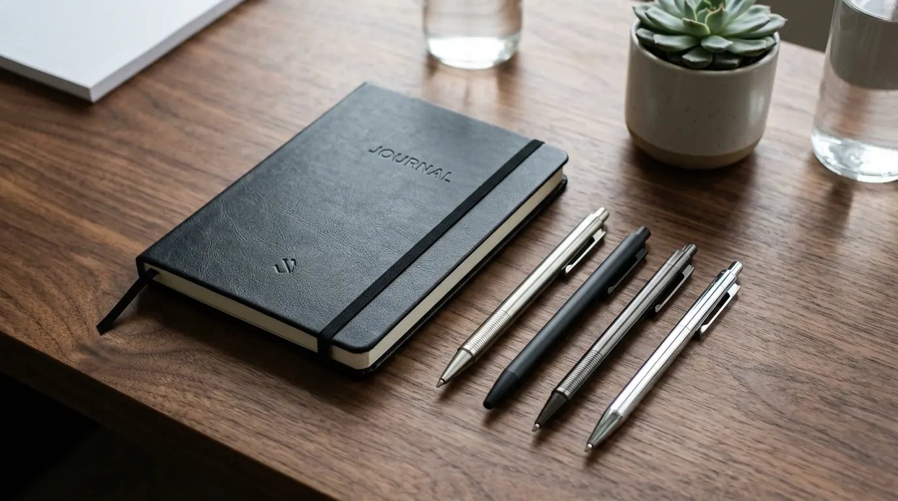

Souvenir Kantor Custom Logo untuk Membangun Identitas Brand yang Lebih Profesional
 Meilita Mujayanti
30 Juli 2026
8 Menit Baca
Meilita Mujayanti
30 Juli 2026
8 Menit Baca
Souvenir kantor custom logo adalah barang bercetak identitas perusahaan yang dipakai untuk memperkuat citra brand, mempererat relasi kerja, dan meningkatkan kesan profesional di mata klien maupun karyawan. Pemilihan produk yang tepat berpengaruh langsung pada persepsi profesionalisme perusahaan.
Souvenir kantor custom logo berfungsi sebagai media branding yang dipakai berulang kali oleh penerimanya. Pemilihan produk yang tepat berpengaruh langsung pada persepsi profesionalisme perusahaan. Kualitas cetak logo dan bahan produk menentukan daya tahan kesan brand di benak audiens. Souvenir kantor dapat disesuaikan dengan berbagai kebutuhan, mulai dari operasional harian hingga acara khusus. Perencanaan anggaran dan pemilihan vendor yang tepat membantu hasil akhir lebih maksimal.
- Apa Itu Souvenir Kantor Custom Logo?
- Mengapa Souvenir Kantor Penting bagi Identitas Brand Perusahaan?
- Apa Saja Jenis Souvenir Kantor Custom Logo yang Umum Digunakan?
- Bagaimana Cara Memilih Souvenir Kantor Custom Logo yang Tepat?
- Apa Saja Kesalahan Umum saat Memesan Souvenir Kantor Custom Logo?
- Bagaimana Souvenir Kantor Custom Logo Berperan dalam Strategi Marketing Perusahaan?
- Kesimpulan
- FAQ
Apa Itu Souvenir Kantor Custom Logo?
Souvenir kantor yang memiliki logo kustom adalah barang yang berfungsi baik sebagai alat maupun hiasan, yang dilengkapi dengan logo, nama, atau identitas visual perusahaan untuk dibagikan kepada karyawan, klien, mitra bisnis, atau tamu dalam suatu acara.
Konsep ini berbeda dari merchandise ritel biasa karena tujuannya bukan dijual, melainkan menjadi representasi identitas perusahaan. Barang yang biasa dijadikan souvenir kantor meliputi alat tulis, tumbler, tas, kalender meja, hingga perangkat kerja seperti flashdisk dan power bank. Semua barang tersebut dicetak dengan elemen visual brand seperti logo, warna korporat, tagline, atau kombinasi ketiganya.

Penggunaan souvenir kantor custom logo umumnya masuk dalam strategi corporate branding jangka panjang. Barang ini dipakai secara berulang oleh penerimanya dalam aktivitas sehari-hari, sehingga logo perusahaan menjadi lebih sering terlihat dibandingkan media promosi konvensional yang hanya tampil sesaat.
Mengapa Souvenir Kantor Penting bagi Identitas Brand Perusahaan?
Souvenir kantor penting bagi identitas brand karena barang ini menjadi pengingat visual yang konsisten, memperkuat kepercayaan relasi bisnis, dan membangun kesan profesional tanpa memerlukan komunikasi verbal tambahan.
Identitas brand tidak hanya dibangun melalui logo di kop surat atau situs web perusahaan, tetapi juga melalui benda-benda fisik yang digunakan sehari-hari. Ketika seorang klien menggunakan pulpen atau tumbler berlogo perusahaan Anda, hal tersebut menciptakan pengulangan visual yang secara alami memperkuat ingatan terhadap brand.
Selain fungsi pengingat, souvenir kantor juga berperan dalam membangun hubungan emosional dengan penerimanya. Karyawan yang menerima souvenir berkualitas cenderung merasa lebih dihargai, sementara klien atau mitra yang menerima souvenir pada momen tertentu—seperti pertemuan bisnis atau penandatanganan kerja sama—akan mengasosiasikan perusahaan Anda dengan kesan perhatian dan profesionalisme.
Dalam konteks yang lebih luas, souvenir kantor custom logo juga berfungsi sebagai bagian dari strategi employer branding. Perusahaan yang konsisten memberikan merchandise berkualitas kepada karyawannya cenderung dipersepsikan lebih matang dalam mengelola budaya kerja dan kesejahteraan tim.
Apa Saja Jenis Souvenir Kantor Custom Logo yang Umum Digunakan?
Jenis souvenir kantor custom logo yang umum digunakan meliputi alat tulis, perlengkapan minum, tas kerja, kalender, dan perangkat elektronik ringan yang dicetak dengan identitas perusahaan. Setiap jenis souvenir memiliki fungsi dan konteks penggunaan yang berbeda.
Alat Tulis
Alat tulis seperti pulpen, notebook, dan sticky notes cocok untuk kebutuhan operasional harian karena harganya relatif terjangkau dan dapat dipesan dalam jumlah besar. Produk ini sering digunakan sebagai souvenir untuk karyawan baru atau peserta seminar.
Perlengkapan Minum
Perlengkapan minum seperti tumbler dan mug lebih sering dipilih untuk memberi kesan personal karena digunakan secara rutin oleh penerimanya. Tumbler stainless steel menjadi pilihan premium yang populer akhir-akhir ini karena tahan lama dan memiliki nilai estetika tinggi.
Tas Kerja
Tas kerja, baik tas laptop maupun totebag, umumnya dipilih untuk acara formal seperti seminar atau konferensi karena ukurannya yang lebih besar memberikan ruang cetak logo yang lebih luas. Tas kanvas ramah lingkungan juga mulai banyak diminati sebagai bentuk komitmen terhadap keberlanjutan.
Kalender dan Agenda
Kalender meja dan agenda tahunan sering digunakan sebagai souvenir akhir tahun karena fungsinya yang bertahan sepanjang tahun berjalan. Desain yang menarik membuat produk ini selalu terpajang di meja kerja penerima.
Perangkat Elektronik Ringan
Perangkat elektronik yang ringan seperti flashdisk, power bank, dan speaker portabel telah menjadi pilihan yang populer akhir-akhir ini karena dianggap lebih modern dan sesuai dengan kebutuhan kerja digital. Jenis produk ini biasanya dipilih untuk klien atau mitra bisnis dengan anggaran yang lebih fleksibel.
Bagaimana Cara Memilih Souvenir Kantor Custom Logo yang Tepat?
Cara memilih souvenir kantor custom logo yang tepat adalah dengan menyesuaikan produk terhadap tujuan pemberian, target penerima, anggaran yang tersedia, dan kualitas cetak logo yang diinginkan.
Langkah 1: Menentukan Tujuan Pemberian
Langkah pertama yang perlu dilakukan adalah menentukan tujuan dari pemberian souvenir. Souvenir untuk karyawan internal biasanya berfokus pada fungsi dan kenyamanan sehari-hari, sedangkan souvenir untuk klien lebih menekankan kesan eksklusif dan kualitas premium. Perbedaan tujuan ini akan memengaruhi jenis produk, bahan, dan tingkat finishing yang dipilih.
Langkah 2: Mempertimbangkan Profil Penerima
Langkah kedua adalah mempertimbangkan profil penerima. Souvenir bagi staf operasional umumnya cukup berupa produk yang fungsional seperti alat tulis atau tumbler, sedangkan souvenir untuk level manajerial atau mitra strategis sebaiknya terbuat dari bahan yang lebih premium seperti stainless steel atau kulit sintetis berkualitas tinggi.
Langkah 3: Menyesuaikan Anggaran
Langkah ketiga adalah menyesuaikan anggaran dengan jumlah pesanan. Semakin besar volume pesanan, semakin penting untuk memastikan efisiensi biaya tanpa mengorbankan kualitas cetak logo. Sebagai gambaran umum, biaya souvenir kantor custom logo dapat bervariasi tergantung jenis bahan, teknik cetak, dan jumlah pesanan yang diminta.
Langkah 4: Memastikan Kualitas Cetak Logo
Langkah terakhir adalah memastikan kualitas cetak logo itu sendiri. Logo yang tercetak buram, mudah pudar, atau tidak presisi justru dapat menurunkan kesan profesional yang ingin dibangun. Oleh karena itu, memilih vendor yang memiliki pengalaman dan standar produksi yang jelas adalah faktor penting dalam keberhasilan strategi branding melalui souvenir kantor.
Apa Saja Kesalahan Umum saat Memesan Souvenir Kantor Custom Logo?
Kesalahan umum saat memesan souvenir kantor custom logo meliputi pemilihan bahan yang tidak sesuai kebutuhan, desain logo yang terlalu rumit, serta kurangnya perencanaan waktu produksi.
Kesalahan 1: Memilih Bahan Termurah
Salah satu kesalahan yang paling sering terjadi adalah memilih bahan produk hanya berdasarkan harga termurah tanpa mempertimbangkan daya tahan dan kenyamanan penggunaan. Produk yang cepat rusak justru dapat menimbulkan kesan sebaliknya dari yang diharapkan, yaitu kesan kurang serius terhadap kualitas.
Kesalahan 2: Desain Logo Terlalu Rumit
Kesalahan lain adalah menggunakan desain logo yang terlalu detail atau memiliki gradasi warna kompleks. Berbagai teknik pencetakan memiliki batasan dalam mereproduksi detail yang halus, sehingga logo yang terlalu kompleks berpotensi tidak terlihat optimal pada produk akhir. Sebaiknya logo disederhanakan atau disesuaikan dengan teknik cetak yang akan digunakan.
Kesalahan 3: Kurangnya Perencanaan Waktu
Kesalahan terakhir yang sering terjadi adalah kurangnya perencanaan waktu. Proses produksi souvenir custom umumnya membutuhkan waktu untuk desain, approval, cetak, dan quality control. Pemesanan yang dilakukan mendekati tanggal acara berisiko menimbulkan keterbatasan pilihan produk maupun kompromi pada kualitas hasil akhir.
Bagaimana Souvenir Kantor Custom Logo Berperan dalam Strategi Marketing Perusahaan?
Souvenir kantor custom logo berperan sebagai media marketing pasif yang memperluas visibilitas brand tanpa memerlukan biaya iklan berkelanjutan.
Berbeda dengan iklan digital yang hanya tampil dalam durasi tertentu, souvenir fisik dapat digunakan berbulan-bulan bahkan bertahun-tahun oleh penerimanya. Setiap kali souvenir tersebut digunakan di ruang publik, seperti tumbler yang dibawa ke kafe atau totebag yang dipakai berbelanja, logo perusahaan secara tidak langsung ikut terekspos kepada orang-orang di sekitar penerima.
Selain itu, souvenir kantor custom logo juga sering digunakan sebagai pelengkap strategi relationship marketing. Pemberian souvenir pada momen tertentu, seperti ulang tahun perusahaan, penandatanganan kontrak, atau kunjungan klien, membantu memperkuat hubungan bisnis jangka panjang secara lebih personal dibandingkan komunikasi formal semata.
Butuh Souvenir Kantor Custom Logo?
Konsultasikan kebutuhan souvenir kantor custom logo Anda dengan tim kami untuk mendapatkan rekomendasi produk dan teknik cetak terbaik.
Konsultasi SekarangKesimpulan
Souvenir kantor custom logo bukan sekadar pelengkap operasional, melainkan investasi jangka panjang untuk memperkuat identitas dan kepercayaan terhadap brand perusahaan. Pemilihan jenis produk, kualitas bahan, dan teknik cetak logo perlu disesuaikan dengan tujuan pemberian serta profil penerima agar hasilnya memberikan dampak maksimal. Perencanaan waktu produksi yang matang serta pemilihan vendor berpengalaman juga menjadi faktor penentu keberhasilan strategi ini. Dengan pendekatan yang tepat, souvenir kantor custom logo dapat menjadi salah satu aset branding paling efektif dan tahan lama bagi perusahaan.
FAQ Seputar Souvenir Kantor Custom Logo